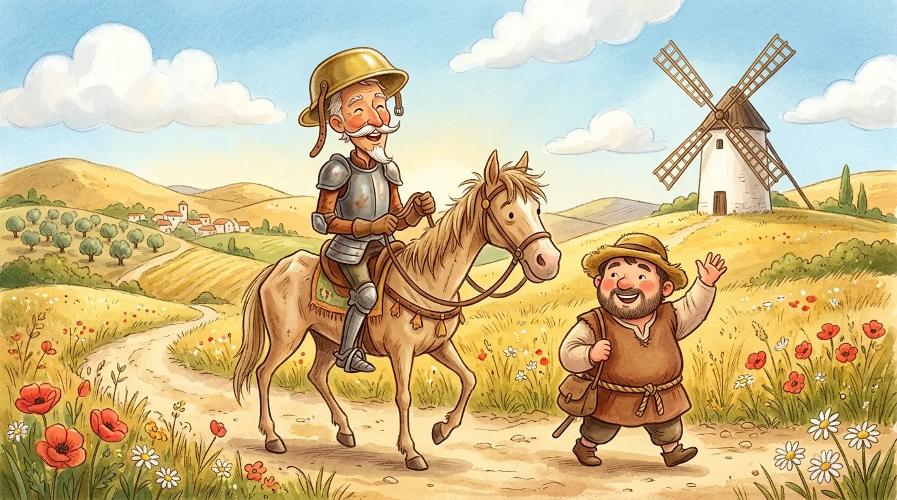

Para pais, mães e educadores
Sobre o Clássicos Vivos
Uma biblioteca aberta de livros digitais interativos que aproxima crianças em fase de alfabetização e letramento (5 a 8 anos) das grandes obras da literatura universal, com ilustrações em aquarela, narração em português e interações pensadas para o toque no tablet.
Como os livros ajudam a ler
-
🗣️ Palavras em destaque
Tocar numa PALAVRA MAIÚSCULA abre um cartão com a palavra separada em sílabas e a pronúncia em voz alta.
-
🔊 Leitura guiada
"Ouvir Página" narra o texto frase por frase, destacando a frase lida para a criança acompanhar.
-
👓 Duas lentes
Cada cena pode ser vista como ela é (Realidade) ou como Dom Quixote a imagina (Imaginação). O texto não muda: muda o olhar.
-
👆 Interações com sentido
Vestir o cavaleiro, alimentar o Rocinante, soprar o vento: cada toque transforma a ilustração, sem competir com a leitura.
Acervo

Dom Quixote de La Mancha · Miguel de Cervantes
Parte 1: O Cavaleiro da Super Imaginação (8 páginas): o fidalgo leitor, a armadura do bisavô, Rocinante e Dulcineia, a pousada-castelo, a sagração sob a lua cheia, o escudeiro Sancho Pança e o duelo contra os moinhos-gigantes.
Parte 2: Exércitos de Lã e o Elmo Encantado: a lança de carvalho, os pastores e a Idade de Ouro, a batalha das ovelhas, o Cavaleiro da Triste Figura, as cabras que atravessam o rio e o elmo de Mambrino.
Parte 3: Serra Morena e a Princesa Micomicona: a mala perdida, as cambalhotas, a carta para Dulcineia, os amigos disfarçados, a princesa Micomicona, a batalha dos odres e o discurso das armas e das letras.
Parte 4: A Jaula Encantada e a Ilha de Sancho: a volta para casa, o cavalo voador Clavilenho, Sancho governador e o mistério da bengala, e o reencontro de Alonso Quixano com as histórias.
Ilustrações das Partes 2 a 4 em produção: enquanto isso, as páginas mostram "Ilustração a caminho".
Como usar no tablet
- Funciona sem internet: depois da primeira visita, o navegador guarda os livros. No Chrome Android, use "Adicionar à tela inicial" para abrir como aplicativo, em tela cheia.
- Toque em 🗣️ Voz, no topo do livro, para escolher quem lê: a narração gravada (quando disponível) ou uma das vozes do aparelho, e a velocidade (normal ou devagar). A escolha fica guardada no tablet.
- As vozes do aparelho dependem do sistema. Se nenhuma soar natural, instale a voz Português (Brasil) nas configurações de "Texto para fala" do tablet; no iPad, baixe as vozes "Aprimoradas".
- Melhor experiência em tablets (retrato ou paisagem). Também funciona no celular e no computador.
Projeto aberto e gratuito. Código sob licença MIT; textos adaptados e ilustrações sob CC BY 4.0, livres para uso em escolas mantendo o crédito ao Clássicos Vivos.
Sugestões e contribuições: github.com/geraldotfilho/classicos-vivos